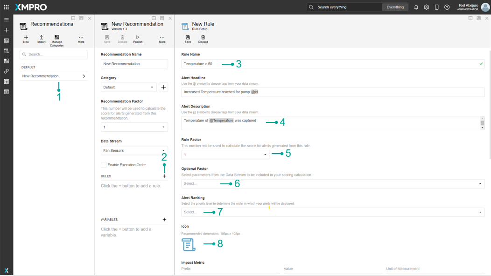
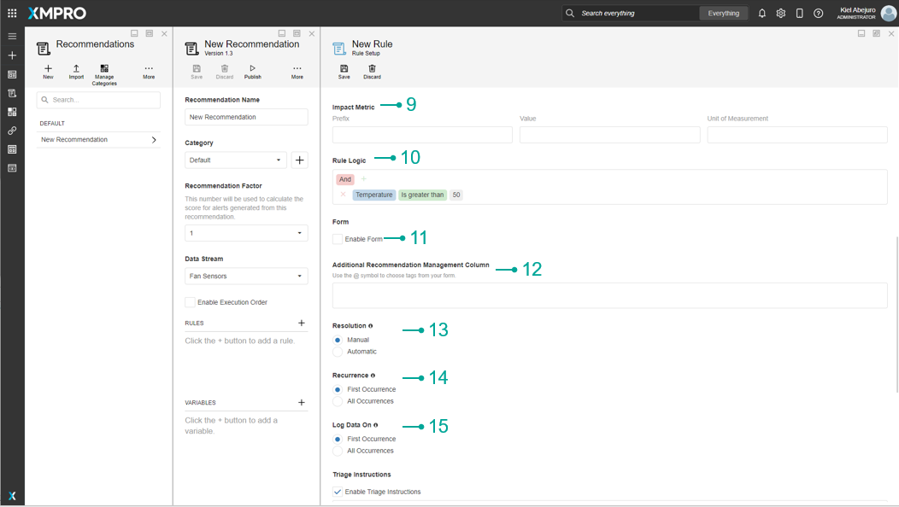
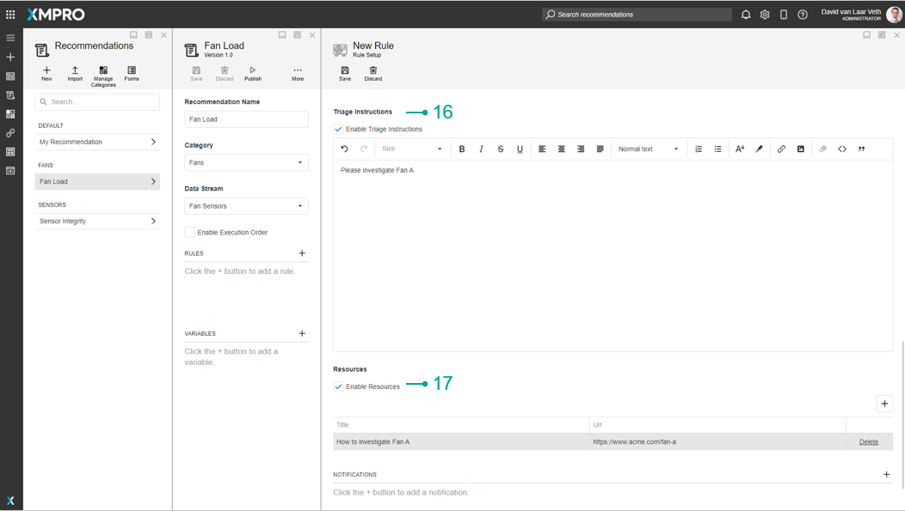
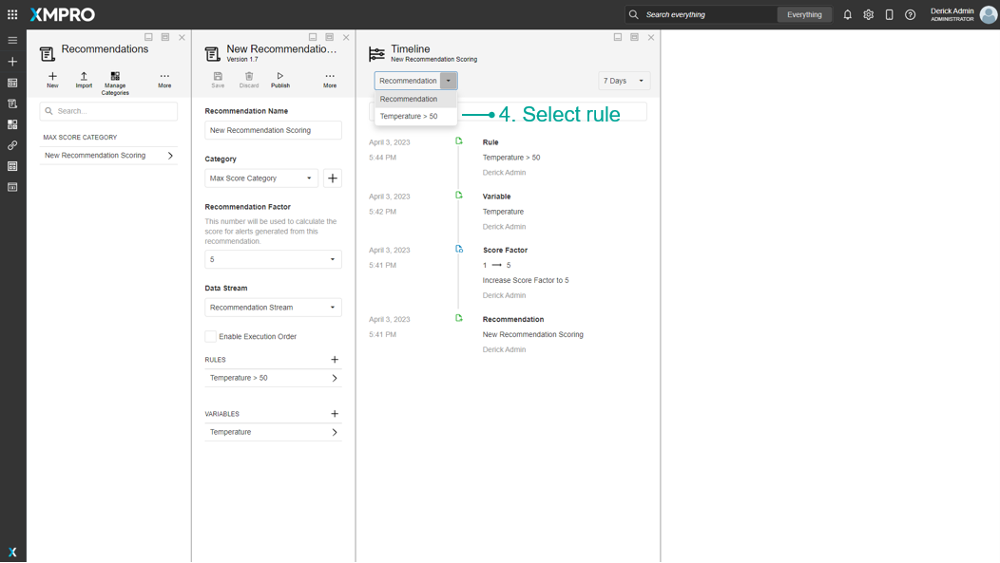
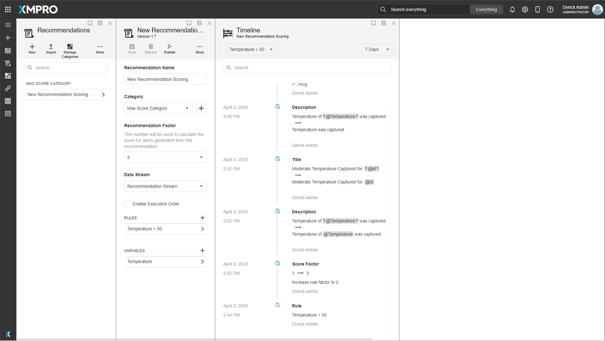
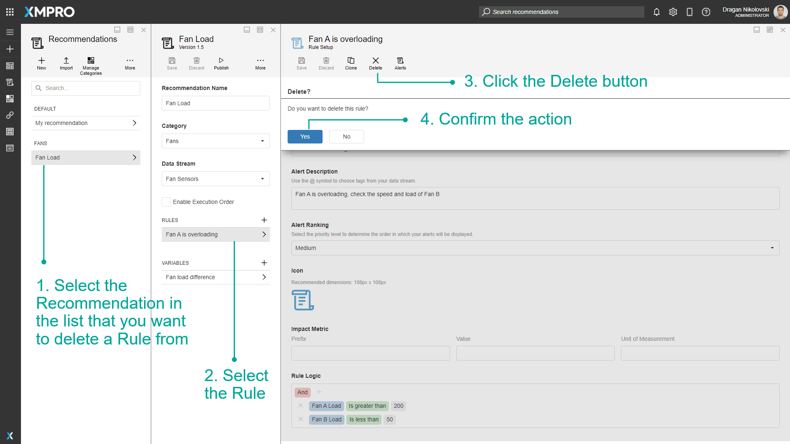

Manage Rules
A Rule is a condition that helps the Recommendation determine whether Recommendation Alerts should be created, and what created Alerts should look like. This is needed for you to create the condition(s) that the Recommendation needs to look for. An example of a Rule is "If the temperature is greater than 50". This catches any data that does not stay within the safe parameters.
Note
It is recommended that you read the articles listed below to improve your understanding of Recommendations.
Create Rules
To create a Rule, follow the steps below:
- Select the Recommendation in the list that you want to add a Rule to.
- Click the + button at the top-right of the Rules list.
- Enter the Rule Name.
- Enter the Alert Headline and Alert Description. If you wish for the values received from the Data Stream to be added to the Headline or Description of the Alerts this Rule will generate, add a tag with the @ symbol and select the Data Stream output.
- Select the Rule Factor.
- (Optional) Select an Optional Factor.
- Select an Alert Ranking.
- (Optional) Select an Icon. Sample icons can be found in the Icon Library.
- (Optional) Choose an Impact Metric.
- Design the Rule Logic that decides when this Rule should generate a Recommendation Alert based on the data received from the Data Stream
- (Optional) Enable Form and Choose a Form and Form Version
- Add an Additional Recommendation Management Column. If you wish for the values entered into the Form to be added to the Additional Information column of the Alerts this Rule will generate, add a tag with the @ symbol and select a Field from the Form.
- Choose a Resolution value. If you want the Alerts generated to automatically resolve themselves if new data is received that doesn't match the Rule Logic, choose Automatic.
- Choose a Recurrence value. If you want a new Alert to be generated every time data is received that matches the Rule Logic, choose All Occurrences.
- Choose a Log Data On value. If you want the Event Data of the Alert to be replaced every time data is received that matches the Rule Logic, choose All Occurrences.
- (Optional) Enable and enter Triage Instructions to be followed in order to resolve the Alert.
- (Optional) Enable and add Resources to link in the Alert for help in resolving the Alert.



View Timeline
To view the timeline for a rule, follow the following steps:
- Select Recommendation
- Click More
- Click Timeline
- Select Rule



Delete Rules
To delete existing Rule, follow the steps below:
- Select the Recommendation in the list that you want to delete a Rule from.
- Select the Rule.
- Click the Delete button.
- Confirm the action.

Note
Deleting a Rule will not permanently delete it or any Recommendation Alerts generated by it. Deletion can be undone or made permanent from Deleted Items.
Further Reading
Last modified: December 05, 2025